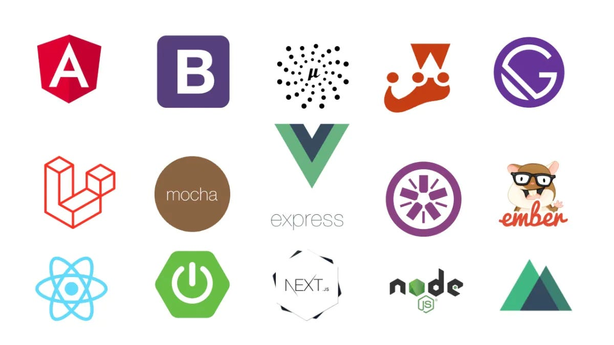

Framework JS (React)
Introducción a React
React es una biblioteca de JavaScript para construir interfaces de usuario. Utiliza un modelo de componentes, lo que permite dividir la interfaz en partes independientes y reutilizables.
JSX es una extensión de sintaxis para JavaScript recomendada para usar con React. Permite escribir estructuras similares a HTML en el mismo archivo que contiene el código JavaScript.
Los props (propiedades) son una forma de pasar datos de un componente padre a un componente hijo. El estado en React permite a los componentes mantener y gestionar datos que cambian con el tiempo.
Componentes Funcionales
Ejemplo de componentes funcionales con props para mostrar datos dinámicos:
// Componente funcional básico
function Welcome(props) {
return <h1>Hello, {props.name}!</h1>;
}
// Componente con destructuring
function UserCard({ name, email, avatar }) {
return (
<div className="user-card">
<img src={avatar} alt={name} />
<h3>{name}</h3>
<p>{email}</p>
</div>
);
}
// Uso de los componentes
function App() {
return (
<div>
<Welcome name="Ivan Paul" />
<UserCard
name="Ivan Paul Gomez"
email="ivan@example.com"
avatar="/avatar.jpg"
/>
</div>
);
}Conceptos Fundamentales
- Componentes: Bloques de construcción reutilizables
- JSX: Sintaxis que combina JavaScript y HTML
- Props: Datos que se pasan entre componentes
- Virtual DOM: Representación en memoria del DOM real
- Renderizado: Proceso de mostrar componentes en pantalla
Reflexión Personal
Aprendí el modelo de componentes y la eficiencia de React para crear interfaces. La reutilización de componentes me permitió escribir código más limpio y mantenible.
El concepto de Virtual DOM y el flujo unidireccional de datos me ayudaron a entender cómo crear aplicaciones más predecibles y fáciles de debuggear.